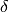
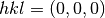
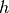
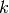
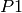
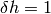
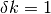

DPF3 Part 1: Correcting poor initial geometry¶
Introduction¶
The following example uses a dataset kindly provided by Wolfram Tempel, which
was collected at beamline 19-ID at the APS. This dataset is available for
download from  .
.
This is a challenging dataset to process. There are a combination of problems, including:
- A ‘reversed’ rotation axis
- Incorrect beam centre recorded in the image headers
- Split spots
- Multiple lattices
- Systematically weak spots that may correspond to pseudocentring
Despite these issues, the diffraction data is of reasonable quality and was used to solve the structure after processing by XDS.
In the first part of this tutorial we will look at how to use the DIALS toolkit to address the poor initial model for the experimental geometry, which leads to problems with indexing. The first listed problem, namely the inverted rotation axis, is trivially dealt with. However the incorrect beam centre is particularly pernicious in this case. Rather than resulting in an outright failure to process, we instead obtain an incorrect indexing solution. If we were being careless, this could have lead to the integration of a useless data set.
This tutorial is a cautionary tale, the moral of which is that the user should employ the diagnostic tools at their disposal and to think about the output of the programs they run.
Import¶
The dataset consists of a tar archive of bz2-compressed images. DIALS can read the compressed images directly, however we need to extract the archive first:
tar xvf DPF3_247398.tar
At this point we have no reason not to trust the image headers. We shall just go ahead and import the whole sweep as normal:
dials.import x247398/t1.0*.img.bz2
This produces the file datablock.json, containing an initial model for
the beamline geometry. You can inspect this model using dials.show:
dials.show datablock.json
Note how the goniometer rotation axis is given by {-1,0,0} rather than
{1,0,0}. This is because DIALS recognises that these images as being
from beamline 19-ID at the APS, which is known to have an inverted axis of
rotation compared with the more common direction. Settings such as inverse
 , or vertical goniometers, can be the cause of problems with
processing data from currently unrecognised beamlines. As an aside, in such
a case we could force the rotation axis to be whatever we want like this:
, or vertical goniometers, can be the cause of problems with
processing data from currently unrecognised beamlines. As an aside, in such
a case we could force the rotation axis to be whatever we want like this:
dials.import x247398/t1.0*.img.bz2 geometry.goniometer.axes=-1,0,0
Now that we have imported the data we should look at the images:
dials.image_viewer datablock.json
Keen-eyed observers may already suspect that the beam centre is not correct, however we shall continue through spot-finding as this is not affected by the experimental geometry.
Find Spots¶
Spot-finding in DIALS usually works well for Pilatus detectors, where default assumptions about Poisson statistics of pixel counts, unity gain and no point spread are accurate. These assumptions are not correct for CCD detectors and this can be another source of problems with data processing.
To see the positions of strong pixels identified by the spot finding
algorithm, select the threshold button at the bottom of the image
viewer’s Settings window. In this case, the default settings are not too
bad: the strong pixels clearly follow the diffraction pattern. However there
is a little bit of noise between the diffraction spots and along some of the
detector module edges. We can try altering the spot finding settings to
improve the threshold map. In this case, setting the Gain to 2.0
seems sufficient to clean up some of the spurious peak positions. The gain
setting we select here will only affect spot finding and not other stages of
processing. Our focus here is empirical. We want to produce a good spot list
for indexing, we are not worried about setting the detector gain to its true
value (for an ADSC Q315r detector this is reported to be about 2.4 ADU per
12 keV X-ray).
Once we are satisfied with the spot-finding settings we can write them out
to find_spots.phil by clicking the Save button on the
Settings window. Then we can pass this directly to
dials.find_spots, where we also request more than one process
to speed the job up (feel free to set this greater than 4, if appropriate):
dials.find_spots datablock.json find_spots.phil nproc=4
After finding strong spots it is always worth viewing them using dials.reciprocal_lattice_viewer:
dials.reciprocal_lattice_viewer datablock.json strong.pickle

Presented with this view, we might already start to worry that something is
not quite right. Instead of neat columns of points corresponding to a
regular reciprocal lattice grid, the points are aligned in curved or even
spiral tracks. Extreme cases of this may indicate something grossly wrong,
like an inverted direction. In this instance the lattice is
still detectable, but distorted. We understand this as inaccurate mapping
from detector to reciprocal space. If the diffraction geometry model is
wrong, then dials.reciprocal_lattice_viewer cannot calculate the
reciprocal lattice position for each centroid properly. This can cause
problems with indexing because that requires exactly the same step of
mapping centroid positions from detector to reciprocal space.
Notwithstanding these concerns, we press on into indexing.
Indexing¶
dials.index datablock.json strong.pickle
It turns out that the reciprocal lattice positions were regular enough for indexing to complete (‘succeed’ is the wrong word, as will become clear). Remember that initial indexing uses fairly low resolution data only. At low resolution the curved tracks of spots are straight enough to fit a lattice. Macrocycles of refinement then extend the solution out to increasingly high resolution. One might imagine this process as steps of unwarping the distorted lattice from the centre outwards until a regular grid is formed. Here’s some output from the end of the indexing log:
RMSDs by experiment:
--------------------------------------------
| Exp | Nref | RMSD_X | RMSD_Y | RMSD_Z |
| id | | (px) | (px) | (images) |
--------------------------------------------
| 0 | 13301 | 0.7553 | 1.0663 | 0.50806 |
--------------------------------------------
Refined crystal models:
model 1 (16384 reflections):
Crystal:
Unit cell: (113.857, 115.036, 122.851, 89.645, 89.771, 60.615)
Space group: P 1
This is another point at which the experienced user may pause for thought. Positional RMSDs of 0.76 and 1.1 pixels are rather bad. Good models typically have values around 0.3 pixels or less. Split spots or other issues with spot profiles may result in higher RMSDs for a solution that is still correct, however we should always remain sceptical. Looking at the results in dials.reciprocal_lattice_viewer is instructive as ever:
dials.reciprocal_lattice_viewer experiments.json indexed.pickle

Refinement has done what it could to produce a regular lattice, but it is still messy. We also see that the majority of the centroids remain unindexed, and these are messier still.

At this point we should definitely heed the warnings and try to figure out what happened and how to fix it. However, unfortunately a careless user could go ahead and integrate with this model. Let’s see what happens if we try to refine compatible Bravais lattices:
dials.refine_bravais_settings experiments.json indexed.pickle
-------------------------------------------------------------------------------------------------------------------
Solution Metric fit rmsd min/max cc #spots lattice unit_cell volume cb_op
-------------------------------------------------------------------------------------------------------------------
12 1.0172 0.337 0.031/0.038 14877 hP 116.62 116.62 125.44 90.00 90.00 120.00 1477363 -a,b,-c
11 1.0172 0.336 -0.031/0.065 14887 oC 116.48 201.29 125.13 90.00 90.00 90.00 2933803 b,-2*a+b,c
10 1.0172 0.322 0.034/0.034 14679 mC 200.78 116.29 124.73 90.00 90.33 90.00 2912345 2*a-b,b,c
9 0.9551 0.309 0.065/0.065 14825 mC 115.76 200.29 124.16 90.00 89.53 90.00 2878506 b,-2*a+b,c
* 8 0.7564 0.271 -0.031/0.036 14684 oC 117.61 201.64 125.75 90.00 90.00 90.00 2982056 a-b,a+b,c
* 7 0.7564 0.265 0.030/0.030 14684 mC 117.37 201.62 125.40 90.00 90.31 90.00 2967360 a-b,a+b,c
* 6 0.6886 0.236 0.036/0.036 14241 mC 200.29 117.01 124.89 90.00 89.60 90.00 2926811 a+b,-a+b,c
* 5 0.3916 0.159 -0.034/0.081 13499 oC 113.77 200.60 122.99 90.00 90.00 90.00 2807091 a,-a+2*b,c
* 4 0.3916 0.157 0.081/0.081 13435 mC 113.59 200.37 122.80 90.00 89.89 90.00 2794850 a,-a+2*b,c
* 3 0.3591 0.161 -0.034/-0.034 13869 mC 200.23 113.73 122.70 90.00 90.26 90.00 2794208 a-2*b,a,c
* 2 0.3600 0.155 -0.031/-0.031 13903 mP 114.25 123.57 115.62 90.00 119.43 90.00 1421681 -a,c,b
* 1 0.0000 0.137 -/- 13723 aP 114.04 115.23 123.07 89.68 89.79 60.61 1409032 a,b,c
-------------------------------------------------------------------------------------------------------------------
It turns out that quite a few lattices can be forced to fit the putative
indexing solution, but again there are warnings everywhere that imply none
of these are right. First look at the Metric fit column. This value is
the Le Page 
value. For a correct indexing solution with a good dataset this should be a
small number, less than 0.1 say, such as in the
Processing in Detail tutorial. The rmsd column reports an
overall positional RMSD. Again, small numbers are better. Typically we would
look for a solution below a jump to higher values of RMSD. Here they are all
pretty bad, at around an order of magnitude larger than what we’d expect
from good data. Another clear indication that none of the symmetry operations
implied by the higher symmetry lattices is correct is given by the min/max
cc column. This reports the lowest and highest correlation coefficients
between the rough spot-finding intensities of subsets of reflections related
by symmetry elements of the lattice. For a real solution without rather
extreme radiation damage or other scaling issues we would expect much larger
numbers than these, say >0.5 or so for both the min and max values.
Check indexing symmetry¶
The fact that none of the correlation coefficients is high is a hint that although the spots we indexed may indeed be real, perhaps the indices are shifted by some value. This would be equivalent to the beam centre latching onto some very low resolution Bragg reflection rather than the direct beam . DIALS offers a tool to check this. If we run:
dials.check_indexing_symmetry experiments.json indexed.pickle grid=1
then all combinations of off-by-one offsets in ,  and will be checked by testing correlation coefficients between sets of reflections related by symmetry. Here the model crystal symmetry is , so we are testing only the Friedel pairs. The results are printed as a table in the output:
Checking HKL origin:
dH dK dL Nref CC
-1 -1 -1 3834 0.255
-1 -1 0 3808 0.288
-1 -1 1 3624 0.306
-1 0 -1 3932 0.261
-1 0 0 3952 0.291
-1 0 1 3829 0.310
-1 1 -1 3800 0.171
-1 1 0 3925 0.230
-1 1 1 4011 0.316
0 0 0 1538 -0.127
1 -1 -1 4028 0.357
1 -1 0 3966 0.323
1 -1 1 3916 0.247
1 0 -1 4086 0.292
1 0 0 4246 0.387
1 0 1 4210 0.356
1 1 -1 4090 0.339
1 1 0 4474 0.389
1 1 1 5616 0.948
Check symmetry operations on 16384 reflections:
Symop Nref CC
x,y,z 16384 0.999
In this case there is a much greater correlation coefficient for the shift
,  and  than for all
others. In fact with 95% correlation even in the unscaled, rough intensities
of the found spots, with no background subtraction, we can be very sure we
have found the right solution.
than for all
others. In fact with 95% correlation even in the unscaled, rough intensities
of the found spots, with no background subtraction, we can be very sure we
have found the right solution.
Although it is possible to apply the correction using dials.reindex like this:
dials.reindex indexed.pickle hkl_offset=1,1,1
it will be very difficult to take the result and continue to process the data. There is a much better way to proceed.
Discover better experimental model¶
We have determined that there is a problem with indexing, which gives us a mis-indexed solution. The typical culprit in such cases is a badly wrong beam centre. DIALS provides the dials.discover_better_experimental_model, which can help out here. This performs a grid search to improve the direct beam position using the methods also implemented in LABELIT.
This sits in between the spot finding and the indexing operations, so that we could have done:
dials.discover_better_experimental_model strong.pickle datablock.json n_macro_cycles=2
In particularly bad cases it may useful to perform this search iteratively. Here we requested two macrocyles, though we see from the concise, yet informative output that most of the shift occurred in the the first of these (and in fact only the first was necessary):
Starting macro cycle 1
Selecting subset of 10000 reflections for analysis
Running DPS using 10000 reflections
Found 9 solutions with max unit cell 164.81 Angstroms.
Old beam centre: 159.98, 154.50 mm (1562.3, 1508.8 px)
New beam centre: 162.31, 153.39 mm (1585.0, 1498.0 px)
Shift: -2.33, 1.11 mm (-22.7, 10.8 px)
Starting macro cycle 2
Selecting subset of 10000 reflections for analysis
Running DPS using 10000 reflections
Found 5 solutions with max unit cell 104.76 Angstroms.
Old beam centre: 162.31, 153.39 mm (1585.0, 1498.0 px)
New beam centre: 162.31, 153.32 mm (1585.0, 1497.3 px)
Shift: 0.00, 0.07 mm (0.0, 0.7 px)
Indexing with the corrected beam centre¶
dials.index optimized_datablock.json strong.pickle
We now have a more convincing solution, which also indexes many more reflections:
RMSDs by experiment:
---------------------------------------------
| Exp | Nref | RMSD_X | RMSD_Y | RMSD_Z |
| id | | (px) | (px) | (images) |
---------------------------------------------
| 0 | 20000 | 0.6645 | 0.68846 | 0.21845 |
---------------------------------------------
Refined crystal models:
model 1 (59317 reflections):
Crystal:
Unit cell: (56.245, 99.563, 121.221, 89.968, 89.987, 90.013)
Space group: P 1
The lattice looks orthorhombic, and indeed the top solution in the table from dials.refine_bravais_settings looks reasonable:
dials.refine_bravais_settings experiments.json indexed.pickle
--------------------------------------------------------------------------------------------------------------
Solution Metric fit rmsd min/max cc #spots lattice unit_cell volume cb_op
--------------------------------------------------------------------------------------------------------------
* 5 0.0346 0.097 0.765/0.861 20000 oP 56.31 99.66 121.36 90.00 90.00 90.00 681094 a,b,c
* 4 0.0344 0.097 0.765/0.765 20000 mP 56.32 99.67 121.38 90.00 90.00 90.00 681353 a,b,c
* 3 0.0346 0.096 0.773/0.773 20000 mP 56.29 121.32 99.63 90.00 90.01 90.00 680434 -a,-c,-b
* 2 0.0184 0.097 0.861/0.861 20000 mP 99.60 56.27 121.28 90.00 89.97 90.00 679739 -b,-a,-c
* 1 0.0000 0.098 -/- 20000 aP 56.28 99.60 121.29 89.97 89.99 90.01 679943 a,b,c
--------------------------------------------------------------------------------------------------------------
We may now go on to refine the solution and integrate, following the steps outlined in the Processing in Detail tutorial. This is left as an exercise for the reader. If you do so, you will notice warnings from both Pointless and cTruncate. You can continue to solve the structure in the primitive orthorhombic lattice, however model refinement will present difficulties.
Could we have foreseen this difficulties as early as the indexing step in DIALS? Can we circumvent them? These are the topics explored in the second part of this tutorial at DPF3 Part 2: A question of centring.
Conclusions¶
- Incorrect or wrongly-interpreted image headers are a fact of life. You will encounter these.
- When beam centre problems are suspected, try dials.discover_better_experimental_model.
- dials.reciprocal_lattice_viewer and dials.image_viewer are excellent troubleshooting tools for all sorts of spot finding and indexing problems.
- Some issues manifest as outright failures in indexing, others are more insidious and may result in a misindexed solution.
- Look out for CCs to detect misindexed data, and remember dials.check_indexing_symmetry.
- Always use the diagnostic tools!
Acknowledgements¶
Thanks to Wolfram Tempel for making this dataset available and inspiring the writing of this tutorial.